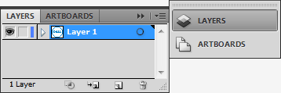
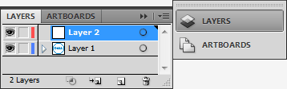
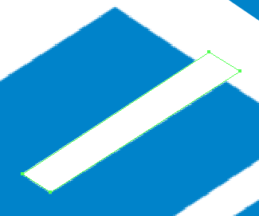
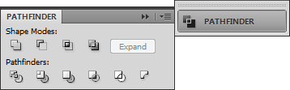

Creating a vector image in Illustrator - Using the Pen tool27/10/15

Welcome to the final part of the three-part series on creating a logo from a source file in Adobe Illustrator. In this last part we created most of the text in the logo. Now we have some text and a background. In this part we will use the Pen tool to create the final letter and finalise the logo.
To create the letter “E” using the Pen tool:
- Open the file from Part 2 in Illustrator
-
Click
 .
.
The Layers panel is displayed.
 -
Click
 to add a new layer.
to add a new layer.
 -
Double-click the new layer.
The Layer Options window is displayed. -
Rename the layer "Letter E".
- Select the Pen tool.
-
Click a corner of the white rectangle inside the “E” shape.
-
Repeat step 3 to create a rectangle slightly longer than the white rectangle in the source image.
 -
Click the Selection tool.

-
Click the rectangle while holding down the Alt key (Option key on a Mac).
The mouse cursor changes to .
.
-
Drag away from the rectangle.
The rectangle is copied. - Select both rectangles and move them off the source image.
- Select the Pen tool.
-
Click the corner of the “E”.
-
Repeat step 14 for the remaining corners to create a diamond.
-
Drag the white rectangles over the diamond until they align with the rectangles in the source image.

- Select the diamond.
- Select Object > Arrange > Send to back.
- Shift-click to select the rectangles and the diamond.
-
Select Window > Pathfinder.
The Pathfinder panel is displayed.
 - Click to minus the rectangles from the image diamond.
-
Select Window > Align.
The Align panel is displayed. - Click to align all the objects along their bottom anchor point.
-
The letter E is created.
- Save the image.
You should save the file as:
- Adobe Illustrator (.ai) file
- Either
- EPS file (page layout, word processing and graphics)
- SVG file (web content).
All the components of the vector image are complete. For a nice finishing touch you could merge the first three letters of the company name into a single shape using the Pathfinder panel.